Qual a diferença de placa mae onboard e offboard?
A diferença entre a placa-mãe on-board e off-board é que as on-board possuem os demais dispositivos do computador (placa de vídeo, placa de áudio, placa de rede, etc.) integrados na própria placa-mãe. Já as placas off-board não possuem os demais dispositivos integrados, sendo necessário instalar os demais dispositivos no computador.
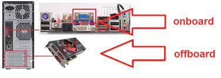
O que é processador?
O processador é a unidade central de processamento de um computador (CPU), que funciona como o cérebro do computador, pois interage e faz as conexões necessárias entre todos os programas instalados.
Neste processo, ele também interpreta as informações enviadas pelos programas, realiza diversas operações, inclusive gerando a interface que nós interagimos quando usamos um computador.
Os processadores são colocados na Placa-Mãe, por soquetes, e sua estrutura é composta por bilhões de transistores.
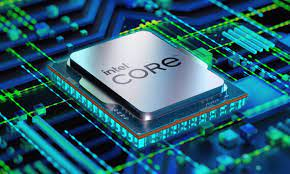
definições sobre os processadores
DDR
 A memória DDR (Double Data Rate) é o padrão que substituiu as tradicionais memórias SDR SDRAM (mais conhecidas como "memórias SDRAM" ou, ainda, como "memórias DIMM"), sendo muito bem recebida pelo mercado, especialmente no segmento de computadores pessoais.
A memória DDR (Double Data Rate) é o padrão que substituiu as tradicionais memórias SDR SDRAM (mais conhecidas como "memórias SDRAM" ou, ainda, como "memórias DIMM"), sendo muito bem recebida pelo mercado, especialmente no segmento de computadores pessoais.
DDR2
 Como o próprio nome sugere, a memória DDR2 (Double Data Rate 2) é uma evolução da memória DDR. Entre suas principais características estão o consumo menor de energia elétrica e maiores taxas de velocidade.
Como o próprio nome sugere, a memória DDR2 (Double Data Rate 2) é uma evolução da memória DDR. Entre suas principais características estão o consumo menor de energia elétrica e maiores taxas de velocidade.
DDR3
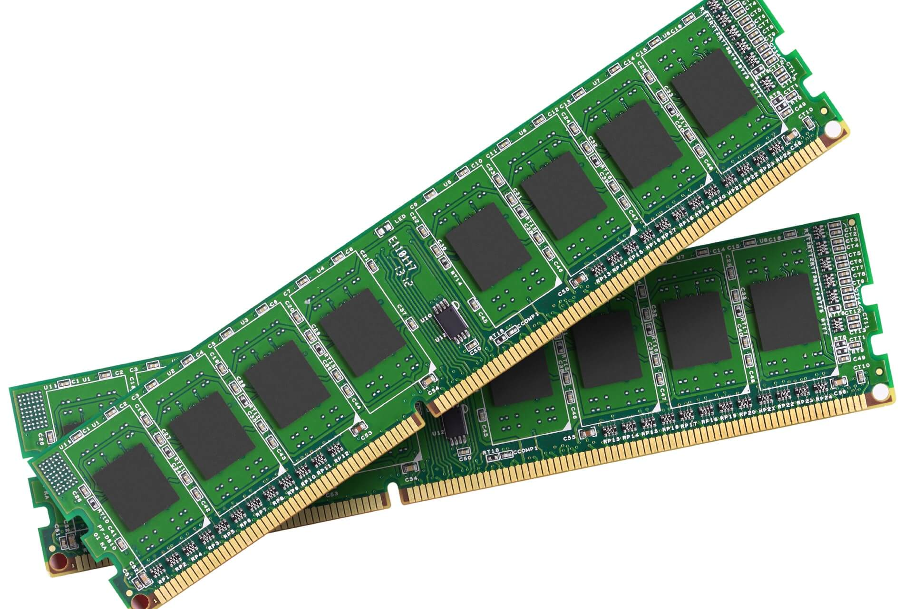
Double Data Rate 3 Synchronous Dynamic Random-Access Memory (memória de acesso aleatório dinâmica síncrona com fluxo de dados duplo tipo 3, DDR3 SDRAM) é um tipo de memória de acesso aleatório dinâmica síncrona (SDRAM) com uma interface de alta largura de banda ("taxa de dados dupla") e está em uso desde 2007.
DDR4
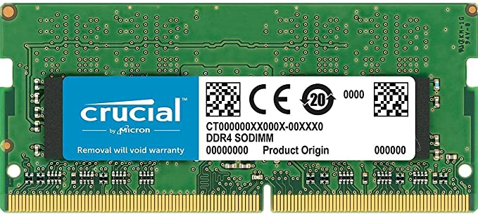
Double Data Rate 4 Synchronous Dynamic Random-Access Memory (DDR4 SDRAM) é um tipo de memória de acesso aleatório dinâmica síncrona (SDRAM) com uma interface de alta largura de banda ("double data rate").
DDR5
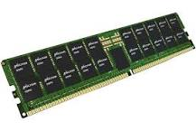
DDR5 é o novo padrão de memória RAM no mercado. A tecnologia teve suas especificações técnicas finais publicadas em julho de 2021, e deve começar a aparecer em produtos voltados para o usuário final ainda este ano.
rom
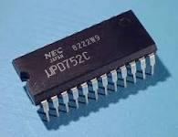
A memória somente de leitura ou ROM é um tipo de memória que permite apenas a leitura, ou seja, as suas informações são gravadas pelo fabricante uma única vez e após isso não podem ser alteradas ou apagadas, somente acessadas. São memórias cujo conteúdo é gravado permanentemente
prom
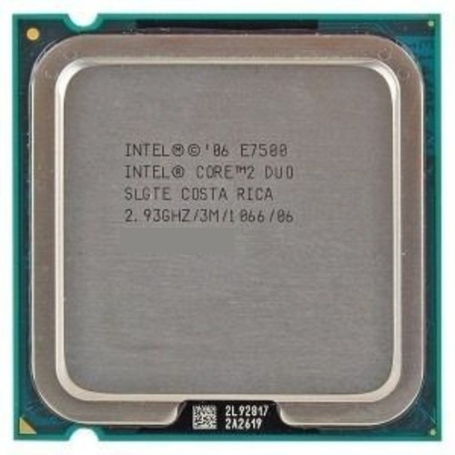
Uma PROM (do inglês programmable read-only memory) ou OTP NVM (one-time programmable non-volatile memory) é uma memória programável só de leitura. É uma forma de memória digital onde o estado de cada bit está trancado por um fusível ou antifusível.[1]
A memória pode ser programada só uma vez depois do fabrico pelo "rebentamento" dos fusíveis (usando um PROM blower), o que é um processo irreversível. O rebentamento de um fusível abre uma ligação, enquanto que o rebentamento de um antifusível fecha uma ligação (daí o nome). A programação é feita pela aplicação de pulsos de alta voltagem, que não são encontrados durante a operação normal (tipicamente, de 12 a 21 volts). Read-only, ou só de leitura, significa que, ao contrário do que acontece com a memória convencional, a programação não pode ser alterada (pelo menos pelo utilizador final).
EPROM
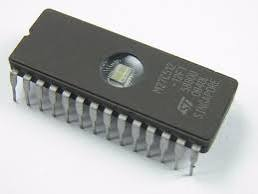
Uma EPROM (sigla do inglês "erasable programmable read-only memory", significando "memória programável apagável somente de leitura") é um tipo de chip de memória de computador que mantém seus dados quando a energia é desligada. Em outras palavras, é não volátil.
EEPROM
 EEPROM é a sigla para “Electrically Erasable Programmable Read-Only Memory”, que em português significa Memória Somente de Leitura Programável Apagável Eletricamente. É uma espécie de versão mais moderna da EPROM, que pode ser apagada e reescrita via eletricidade, e não por luz ultravioleta
EEPROM é a sigla para “Electrically Erasable Programmable Read-Only Memory”, que em português significa Memória Somente de Leitura Programável Apagável Eletricamente. É uma espécie de versão mais moderna da EPROM, que pode ser apagada e reescrita via eletricidade, e não por luz ultravioleta
Qual a função da bateria de Litium?

Bateria íon-lítio ou bateria de ião lítio é um tipo de bateria recarregável muito utilizadas em equipamentos eletrônicos portáteis. Armazenam o dobro de energia que uma bateria de hidreto metálico de níquel (ou NiMH) e três vezes mais que uma bateria de níquel cádmio (ou NiCd).
Quais os tipos de conectores para unidade de armazenamento interna?
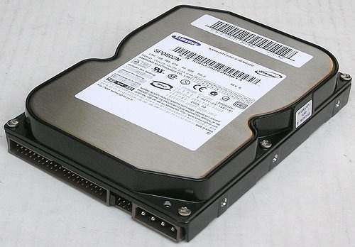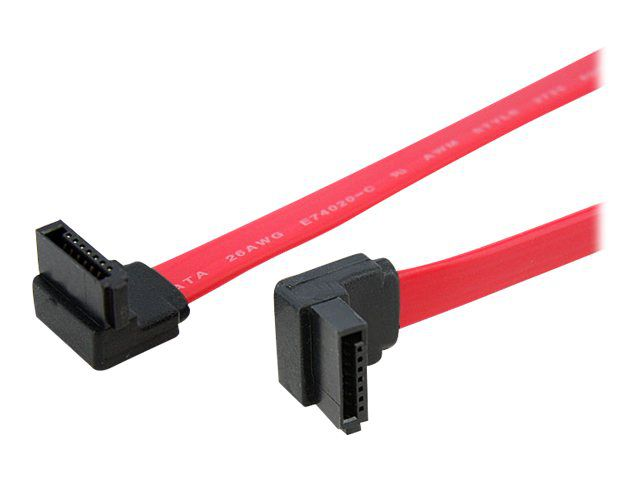
Se você está procurando um novo disco rígido para o computador, não compre antes de saber a diferença entre eles e todos os detalhes que os diferenciam. Existem dois tipos de HDs, o HD SATA e o HD ATA. Essas terminologias se referem ao tipo de conexão do componente, características que influenciam na velocidade e na qualidade dos dados transferidos entre o dispositivo de armazenamento físico e o sistema operacional do computador.
O que é slot de expansão?
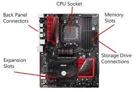
Um slot de expansão refere-se a qualquer um dos slots da placa-mãe que pode conter uma placa de expansão para expandir a funcionalidade do computador, como uma placa de vídeo, placa de rede ou placa de som.
Alguns sistemas mais antigos exigem o uso de uma placa riser para adicionar placas de expansão adicionais, mas os computadores modernos geralmente não apenas têm opções de slots de expansão suficientes, mas também possuem recursos integrados diretamente na placa-mãe, eliminando a necessidade de muitas placas de expansão.
Qual a estrutura interna do processador, ou seja, seus componentes?
Frequência de Processador (Velocidade, clock). Medido em hertz, define a capacidade do processador em processar informações ao mesmo tempo.
Cores: O core é o núcleo do processador. Existem processadores core e multicore, ou seja, processadores com um núcleo e com vários núcleos na mesma peça.
Cache: A memória Cache é um tipo de memória auxiliar, que faz diminuir o tempo de transmissão de informações entre o processador e outros componentes
Potência: Medida em Watts é a quantia de energia que é consumida por segundo. 1W = 1 J/s (Joule por segundo)
Qual a função do Cooler e Dissipador de Calor?
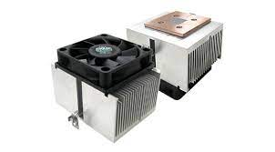
o cooler e dissipador de calor são acessórios que atuam em conjunto e são usados em variados tipos de equipamentos eletrônicos. A principal função dos materiais é absorver o calor que é comumente originado pelo processador da máquina.
Por que devemos colocar pasta térmica entre o processador e dissipador?
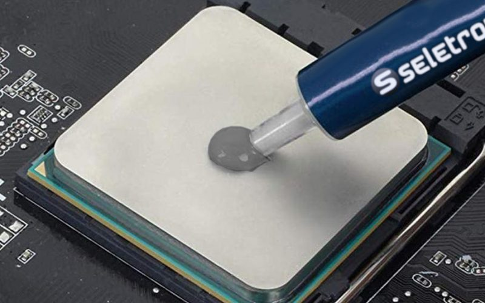
A função é ajudar a eliminar o calor que o processador gera. Ela é aplicada entre o processador e o dissipador, fazendo uma ponte entre eles. A pasta leva o calor até o dissipador
Quais os diversos tipos de placa mãe?
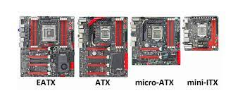
Placa-mãe ATX. ATX é a sigla para Advanced Technology Extended.
Placa-mãe Micro ATX (mATX)
Placa-mãe Mini ITX
Placa-mãe Nano ITX
Placa-mãe Pico ITX
.
Quais os tipos de conectores de:
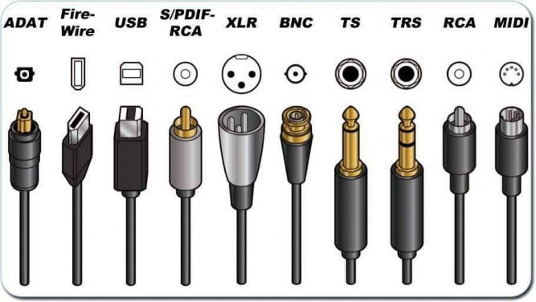
Os conectores mais empregados em áudio são o XLR de três pinos (Cannon), os conectores RCA e os TRS. O conector mais empregado em áudio profissional é o XLR, também conhecido como Cannon.
vídeo
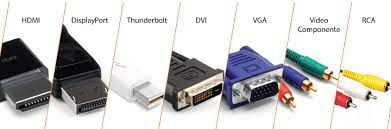
Esses conectores são chamados de HDMI A, B, C, D,e E e podem ser vistos na figura abaixo. Os mais usados são o Tipo A (encontrado nas placas de vídeo, notebooks, TV's, etc.) e o Tipo D (também conhecido como micro HDMI).
Rede
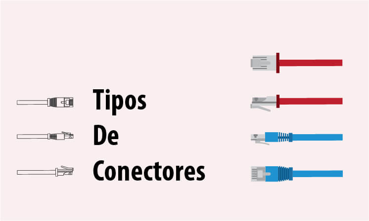
3 tipos de cabo de rede principais: os cabos de par trançado, fibra óptica e cabo coaxial. Para cada cabo, também precisamos de diferentes tipos de conectores de rede como, por exemplo BNC, para thin ethernet, AUI, para thick ethernet e o RJ-45, para twisted pair.
antena wifi e bluetooth
sobretudo as antenas de maior ganho, utilizam conectores tipo N (N-Type), um tipo de conector para cabos coaxiais que é usado desde a década de 1940 e tem se mantido atual devido a melhorias nas técnicas de fabricação, que levaram à produção de conectores cada vez mais precisos e com menos perda de sinal.
Quais os diversos tipos de armazenamento de dados que você conhece?
HDD e SSD. Embora os HDDs sejam os mais tradicionais, os SSDs estão ultrapassando rapidamente o HDD como a tecnologia preferida para armazenamento secundário.